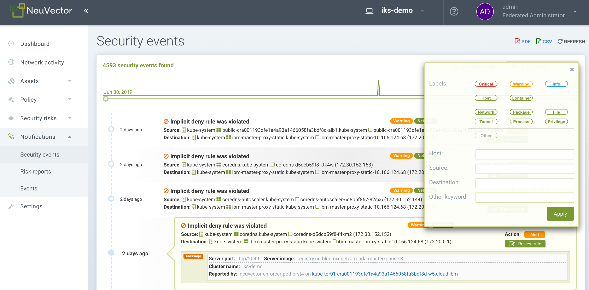

Relatórios e Notificações
Geração de relatórios
Os relatórios podem ser visualizados e baixados a partir de vários menus no SUSE® Security console. O Painel exibe um resumo de segurança que pode ser baixado como um PDF. O download do PDF pode ser filtrado por um namespace, se desejado.

A varredura de vulnerabilidades e os resultados do benchmark CIS para registros, contêineres, nós e plataformas também podem ser baixados como arquivos CSV a partir de seus respectivos menus nas seções do menu de Ativos.
O menu de Riscos de Segurança fornece correlação avançada, filtragem e relatórios para vulnerabilidades e verificações de conformidade. Visualizações filtradas podem ser exportadas em formatos CSV ou PDF.

Relatórios de conformidade para PCI, HIPAA, GDPR e outras regulamentações podem ser filtrados, visualizados e exportados selecionando a regulamentação no popup de filtro avançado em Riscos de Segurança → Conformidade.

Relatórios de Eventos
Todos os eventos, como segurança, administração, admissão, varredura e risco, são registrados por SUSE® Security e também podem ser visualizados no Console no menu de Notificações. Veja os detalhes a seguir.
Limites de Eventos
Todos os eventos são armazenados na memória para exibição nas telas do Painel e Notificações. Espera-se que os eventos sejam enviados via SYSLOG, webhook ou outros meios para serem armazenados e gerenciados por um sistema SIEM. Atualmente, há um limite de 4K para cada tipo de evento abaixo:
-
Relatórios de Risco (varredura, encontrados em Notificações → Relatórios de Risco)
-
Eventos Gerais (administração, encontrados nas Notificações → Eventos)
-
Violações (violações de rede, encontradas nas Notificações → Eventos de Segurança)
-
Ameaças (ataques de rede e problemas de conexão, encontrados nas Notificações → Eventos de Segurança)
-
Incidentes (violações de processo e arquivo, encontrados nas Notificações → Eventos de Segurança)
É por isso que, uma vez que o limite é atingido, apenas os 4K eventos mais recentes desse tipo são exibidos. Isso afeta as listas de Notificações, bem como as exibições no Painel.
SIEM e SYSLOG
Você pode configurar o servidor SYSLOG e as notificações de webhook no SUSE® Security console no menu → Configuração. Escolha o nível de registro, TCP ou UDP, e o formato se JSON for desejado. Os dados CVE podem ser enviados individualmente para cada CVE e/ou incluir resultados de varredura em camadas. Você também pode optar por enviar eventos para o log do pod do controlador em vez de ou além do SYSLOG. Observe que os eventos são enviados apenas para o log do pod do controlador principal.
Você pode então usar suas ferramentas de relatórios favoritas para monitorar SUSE® Security os eventos.
Além disso, você pode configurar seu servidor SYSLOG através da CLI da seguinte forma:
> set system syslog_server <ip>[:port]A API REST também pode ser usada para configuração.
Saída SYSLOG de Exemplo
Violação de Rede
2020-01-24T21:39:34Z neuvector-controller-pod-575f94dccf-rccmt /usr/local/bin/controller 12 neuvector - notification=violation,level=Warning,reported_timestamp=1579901965,reported_at=2020-01-24T21:39:25Z,cluster_name=cluster.local,client_id=edf1c28d3411a9686e6e0374a9325b6a3626619938d3cf435a9d90075a1ef653,client_name=k8s_POD_node-pod-7c57bdbf5d-dxkn4_default_cdd9cf23-488d-439c-9408-ed98f838c67b_0,client_domain=default,client_image=k8s.gcr.io/pause:3.1,client_service=node-pod.default,server_id=external,server_name=external,server_port=80,ip_proto=6,applications=[HTTP],servers=[],sessions=1,policy_action=violate,policy_id=0,client_ip=192.168.35.69,server_ip=172.217.5.110Violação de Processo
2020-01-24T21:39:29Z neuvector-controller-pod-575f94dccf-rccmt /usr/local/bin/controller 12 neuvector - notification=incident,name=Process.Profile.Violation,level=Warning,reported_timestamp=1579901965,reported_at=2020-01-24T21:39:25Z,cluster_name=cluster.local,host_id=k43:HF45:AJC6:5RYO:O5OA:KACD:KRT2:M3O6:P3VQ:IC4I:FSRD:P3HJ:ETLS,host_name=k43,enforcer_id=90822bad25eea14180c0942bf30197528bdab8c8237f307cc3059e6bbdb91f7a,enforcer_name=k8s_neuvector-enforcer-pod_neuvector-enforcer-pod-cg8jp_neuvector_d4ef187e-041c-4bc2-9cdc-c563a3feac6c_0,workload_id=d1be6d14f1f2782029d0944040ea8c0ba581991de99df86041205e15abc80209,workload_name=k8s_node-pod_node-pod-7c57bdbf5d-dxkn4_default_cdd9cf23-488d-439c-9408-ed98f838c67b_0,workload_domain=default,workload_image=nvbeta/node:latest,workload_service=node-pod.default,proc_name=curl,proc_path=/usr/bin/curl,proc_cmd=curl google.com,proc_effective_uid=1000,proc_effective_user=neuvector,client_ip=,server_ip=,client_port=0,server_port=0,server_conn_port=0,ether_type=0,ip_proto=0,conn_ingress=false,proc_parent_name=docker-runc,proc_parent_path=/usr/bin/docker-runc,action=violate,group=nv.node-pod.default,aggregation_from=1579901965,count=1,message=Process profile violationControle de Admissão
2020-01-24T21:48:31Z neuvector-controller-pod-575f94dccf-rccmt /usr/local/bin/controller 12 neuvector - notification=audit,name=Admission.Control.Violation,level=Warning,reported_timestamp=1579902506,reported_at=2020-01-24T21:48:26Z,cluster_name=cluster.local,host_id=,host_name=,enforcer_id=,enforcer_name=,workload_domain=default,workload_image=nvbeta/swarm_nginx,base_os=,high_vul_cnt=0,medium_vul_cnt=0,cvedb_version=,message=Creation of Kubernetes ReplicaSet resource (nginx-pod-695cd4b87b) violates Admission Control deny rule id 1000 but is allowed in monitor mode [Notice: the requested image(s) are not scanned: nvbeta/swarm_nginx],user=kubernetes-admin,error=,aggregation_from=1579902506,count=1,platform=,platform_version=Para capturar a saída SYSLOG:
nc -l -p 8514 -o syslog-dump.hex | tee syslog-messages.txtCaptura mensagens na tela, registra-as em arquivo e faz um hexdump.
Notificações e Registros
No SUSE® Security Console no menu de Notificações, você pode encontrar notificações para Eventos de Segurança, Eventos de Risco (Escaneamento e Conformidade) e eventos gerais do sistema.
As notificações podem ser baixadas como CSV ou PDF a partir dos menus de Notificações. Além disso, capturas de pacotes podem ser baixadas para ataques de rede, e resultados de vulnerabilidades podem ser baixados do menu de relatórios de Risco → para cada resultado da varredura.
Você também pode exibir os registros usando a CLI ou a API REST.
Security Events
Violações são conexões que violam as Regras da lista branca ou correspondem a uma Regra da lista negra. Violações de rede são capturadas e os IPs de origem podem ser investigados mais a fundo. Eventos de violação da lista branca de rede aparecem como "Regra de Negação Implícita Violada" para indicar que a conexão de rede não correspondeu a nenhuma regra da lista branca.

Nesta visualização, você pode revisar eventos de rede, processo e arquivo e facilmente adicionar uma regra da lista branca para falsos positivos clicando no botão Revisar Regra. O Filtro Avançado permite que você selecione o tipo de evento a ser exibido.

SUSE® Security também monitora continuamente todos os contêineres para ataques conhecidos, como DNS, DDoS, HTTP-smuggling, tunelamento, etc. Quando um ataque é detectado, ele é registrado aqui e bloqueado (se o contêiner/serviço estiver configurado para proteger), e o pacote é automaticamente capturado. Você pode visualizar os detalhes do pacote, por exemplo:

Adicionar Novas Regras para Eventos de Segurança
Você pode facilmente adicionar regras (Política de Segurança) para permitir ou negar o evento detectado selecionando o botão Revisar Regra e implantando uma nova regra.

Isso é útil se ocorrerem falsos positivos ou se um comportamento de rede/processo deveria ter sido descoberto, mas não ocorreu durante o modo de Descoberta.
Filtros Avançados
Crie um filtro avançado para visualizar ou exportar eventos selecionando cada tipo geral ou inserindo palavras-chave.
-
Rede. Eventos de rede, como violações (regras de negação implícita), ameaças.
-
Processo. Violações de lista branca de processos ou processos suspeitos detectados, como NMAP, SSH, etc.
-
Pacote. Um pacote foi atualizado ou instalado no contêiner, portanto, isso gerou um evento de segurança.
-
Túnel. Uma violação de túnel foi detectada. Tunelamento, tipicamente o tunelamento DNS é usado para roubar dados. Essa detecção é feita ao ver um processo de tunelamento iniciar e correlacioná-lo com uma atividade de rede com o protocolo DNS. Veja um exemplo de evento abaixo. Descrição do túnel de iodo https://github.com/yarrick/iodine
-
File. Violação de acesso a arquivo. Ou um arquivo/diretório sensível monitorado foi acessado (veja a lista de monitoramento padrão), ou uma regra de monitoramento de arquivo personalizada foi acionada. Consulte a página Regras de Acesso a Arquivos para mais informações.
-
Privilégio. Uma elevação de privilégio foi detectada no contêiner ou host. Escaladas de privilégio podem ser feitas de várias maneiras e não são 100% detectáveis, portanto, esta é uma condição difícil de testar.
Outras Integrações
SUSE® Security publicou um exportador Prometheus com um painel Grafana na conta do GitHub SUSE® Security https://github.com/neuvector/prometheus-exporter, que pode ser personalizado para cada instalação. Além disso, integrações de exemplo com Fluentd também estão disponíveis mediante solicitação.
Alertas de webhook podem ser enviados configurando o endpoint do webhook no menu → Configuração. Em seguida, crie a(s) regra(s) de resposta apropriada(s) no menu → Regras de Resposta da Política para selecionar o tipo de evento e o webhook como ação.